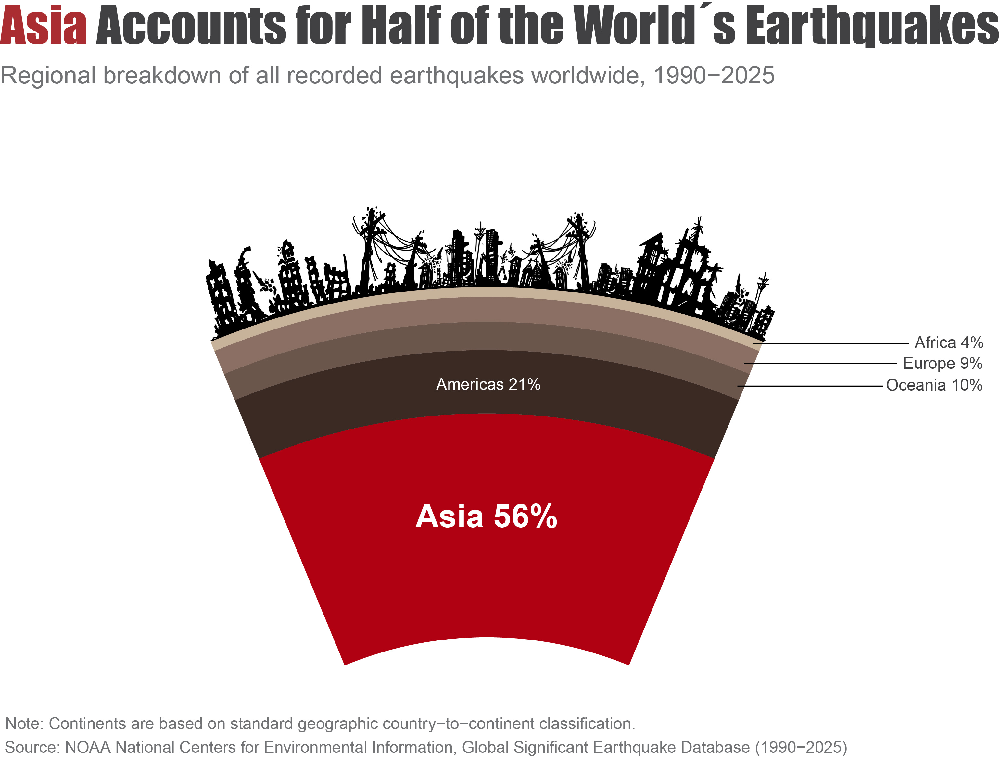
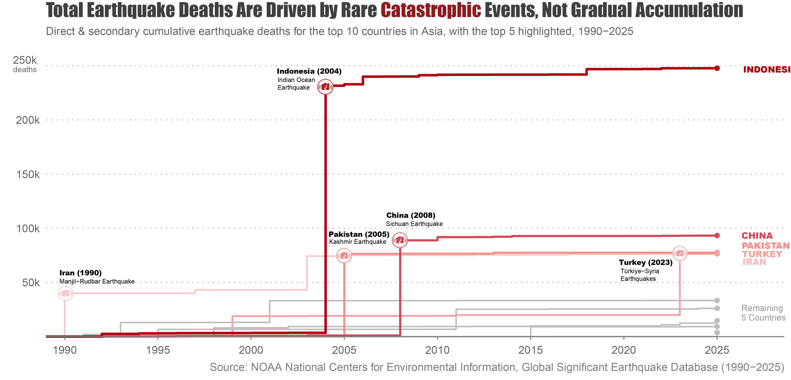
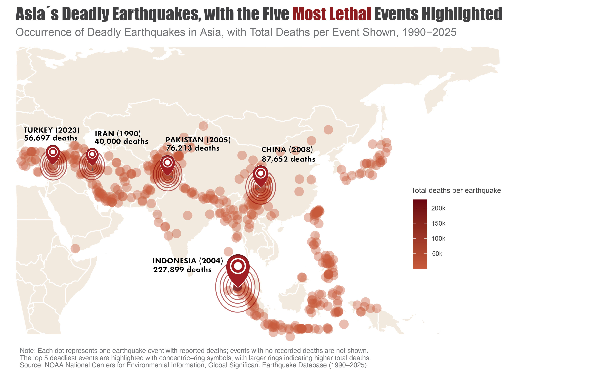

Three visualizations from my DATA 1500 project about earthquakes
[Intro paragraph placeholder: Briefly introduce the project, explain the main question, and tell the reader what the three plots show overall.]

[Plot 1 paragraph placeholder: Explain what this chart shows, highlight the key takeaway, and tell the reader why it matters.]

[Plot 2 paragraph placeholder: Describe the pattern in the data and point out the most important finding from this figure.]

[Plot 3 paragraph placeholder: Summarize what the map or chart reveals and connect it back to the overall story of the project.]
[Reference placeholder 1: Data source, author or organization, year.]
[Reference placeholder 2: Additional source, article, or methodology reference.]
[Reference placeholder 3: Any other source used for context, background, or analysis.]